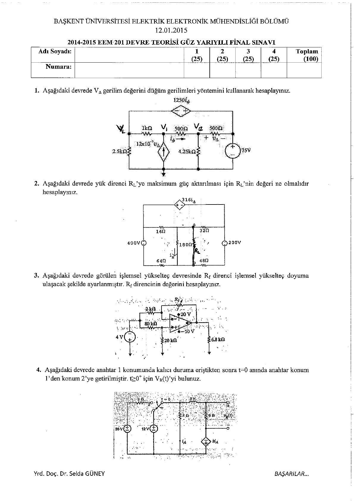
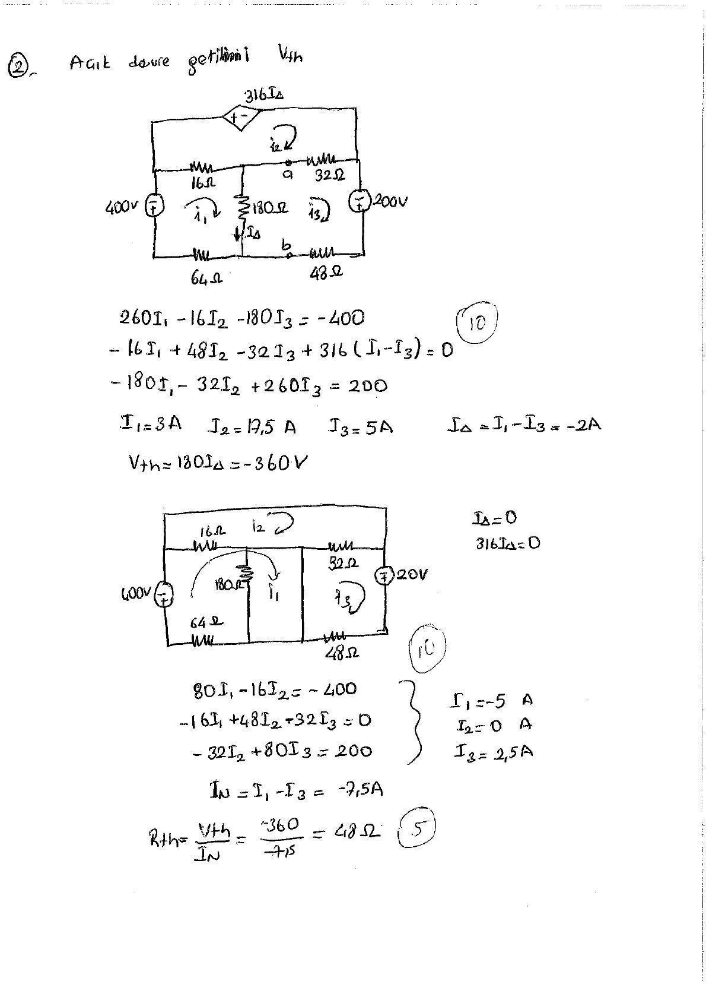
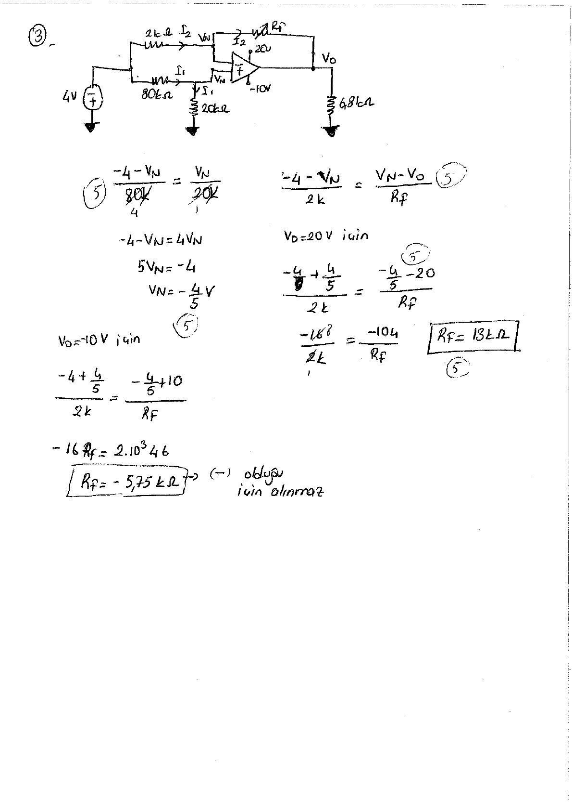
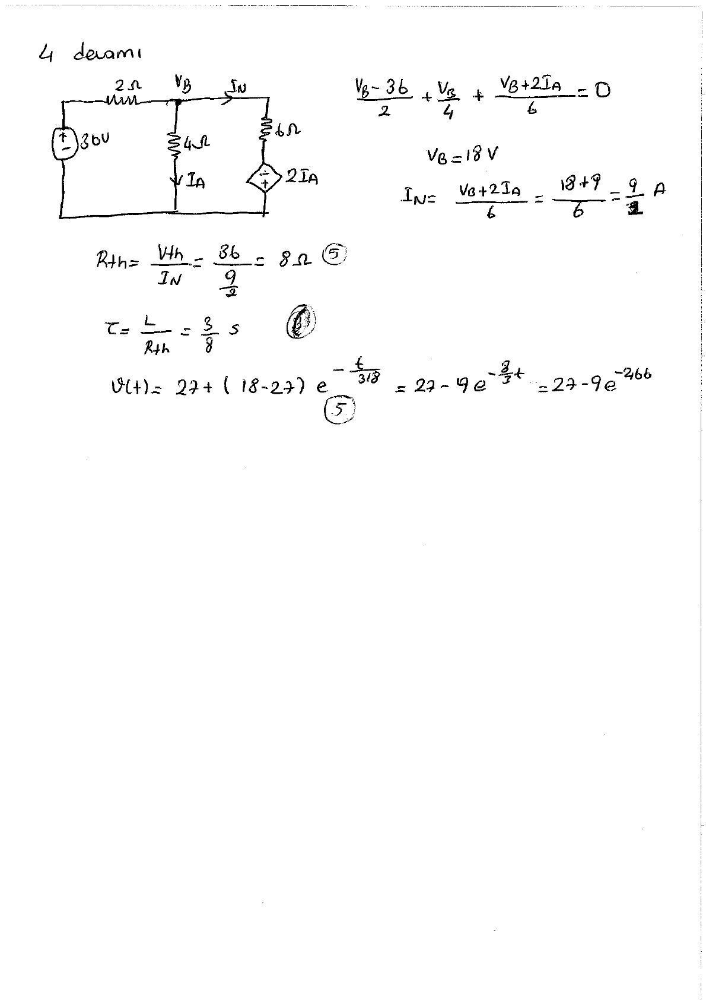

· EEM201
EEM201 Devre Teorisi I: 12 Ocak 2015 Final Sınavı ve El Yazısı Çözümleri
EEM201 – Devre Teorisi I · 12.01.2015 · 18.10.2026
Başkent Üniversitesi EEM201 Devre Teorisi I dersinin 12 Ocak 2015 tarihli, 2014–2015 güz final sınavıdır. Soru kâğıdında Yrd. Doç. Dr. Selda Güney adı yer alıyor. EEM202 klasöründe bulunan altı sayfalık taranmış PDF, dört soru ile el yazısı çözümlerini içeriyor. Soru metinleri ve ana hesaplar aşağıdadır; PDF yazının sonunda indirilebilir.
Sınav soruları
Her soru 25 puandır.
- Verilen devrede VΔ gerilimini düğüm gerilimleri yöntemiyle hesaplayınız.
- Yük direncine maksimum güç aktarılması için R_L değerini hesaplayınız.
- İşlemsel yükselteç devresinde R_f direnci hangi değerdeyken op-amp doyuma ulaşır? O andaki çıkış gerilimini bulunuz.
- Anahtar 1 konumunda kalıcı duruma ulaştıktan sonra t = 0'da 2'ye geçiriliyor. t ≥ 0 için v(t)'yi bulunuz.

Soru 1: Düğüm gerilimleri
Çözümde bağımlı kaynağın kontrol gerilimi VΔ = V₂ − 75 alınır. Düğüm denklemleri düzenlenince:
- 16,5V₂ − 5,5V₁ = 825
- 180V₂ − 85V₁ = 6375
Bu sistemden V₁ = 105 V, V₂ = 85 V, dolayısıyla VΔ = 10 V bulunur.
Soru 2: Maksimum güç
Yük kaldırılarak çevre akımları hesaplanır:
- 260I₁ − 16I₂ − 180I₃ = −400
- −16I₁ + 48I₂ − 32I₃ + 316(I₁ − I₃) = 0
- −180I₁ − 32I₂ + 260I₃ = 200
Çözüm: I₁ = 3 A, I₂ = 17,5 A ve I₃ = 5 A. IΔ = I₁ − I₃ = −2 A olduğundan V_Th = 180IΔ = −360 V.
Kısa devre hesabında I_N = −7,5 A. Böylece R_Th = V_Th/I_N = 48 Ω, maksimum güç için R_L = 48 Ω.
Not: Denklemlere I₁ = 3, I₂ = 17,5, I₃ = 5 yazıldığında üç eşitlik de sağlanır; −360/(−7,5) = 48 Ω.

Soru 3: Op-amp doyumu
Pozitif girişteki düğüm için (−4 − V_N)/80k = V_N/20k; buradan V_N = −4/5 V.
Eviren girişteki KCL, R_f değerini çıkış gerilimine bağlar. Çıkışın pozitif besleme sınırı olan +20 V'a ulaşması için bulunan direnç negatiftir; fiziksel pozitif dirençle bu durum oluşmaz. Negatif besleme sınırı V_o = −10 V için R_f = 13 kΩ elde edilir.

Soru 4: RL geçici rejimi
Anahtar 1 konumunda kalıcı durumda bobin kısa devredir:
- I_A = 12/4 = 3 A
- 12 = 6i_L(0⁻) − 2I_A ⇒ i_L(0⁻) = 3 A
- i_L(0⁺) = 3 A, v(0⁺) = 3·6 = 18 V.
Anahtar 2 konumunda kalıcı durumda düğüm gerilimi V_B = 18 V, kontrol akımı 4,5 A olur. Direnç uçlarındaki son gerilim v(∞) = 27 V.
Bobinin gördüğü eşdeğer için V_Th = 36 V, I_N = 9/2 A ve R_Th = 8 Ω bulunur. L = 3 H olduğundan τ = 3/8 s.
v(t) = 27 + (18 − 27)e^(−t/(3/8)) = 27 − 9e^(−8t/3) V, t ≥ 0.
Not: Kaynağın son satırındaki yaklaşık üs −2,66t biçimindedir. Tam kesirle −8t/3 yazıldığında başlangıç ve son değerler sırasıyla 18 V ve 27 V olarak doğrulanır.
